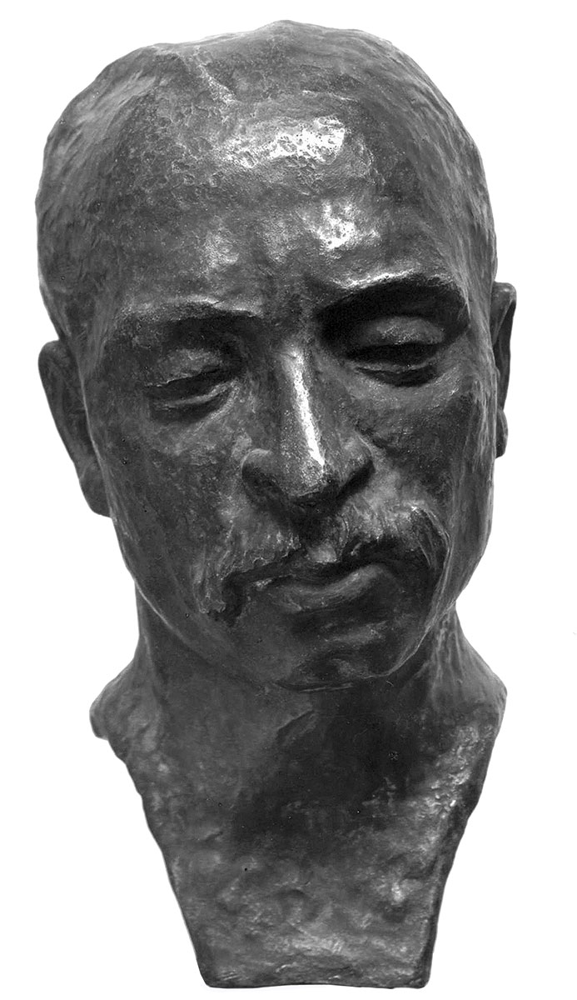

Portrety Rilkego
Clara Rilke-Westhoff 1936
Dziękuję, Kochana, za wszystkie słowa, które kierujesz do mnie, dźwięczą one we mnie i trwają w oczekiwaniu na następny list, i zawsze przepełnia mnie brzmienie Twego głosu.
Burza. Czy aż takie burze huczą na Waszym niebie?! Tutaj również czasem rozlega się grzmot, chmury zasnuwają niebo, po czym zrywa się ulewa; deszcz pluszcze nieprzerwanie, godzina za godziną, a kiedy milknie, powietrze jest niezmiennie ciężkie i przytłaczające jak ołów. Pięknie opisałaś burzę; kiedy opowiadasz o takich zjawiskach, potrafisz oddać w pozornie zwięzłej formie nieskończenie wiele z tego, co niewyrażalne — niczym wielki poeta.
— Rilke w liście do Clary Westhoff, 2 IX 1902
Popiersie poety wykonane przez Clarę Rilke-Westhoff we wrześniu 1936 roku, obecnie w zbiorach Kunsthalle Bremen